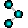

Neural MMO provides a pettingzoo compliant environment API, an extensive configuration system, and support for agent scripting, OpenSkill evaluation, custom terrain generation, and overlay visualization. This section is intended as a reference – the tutorials provide a much better starting point for most users.
 Environment¶
Config¶
Ratings¶
Scripting¶
To support scripted models, we provide a small wrapper class for extracting meaningful attributes from observation tensors. We also expose static definitions of the environment’s materials and observation/action spaces. The core environment ships with a random example agent; more are available in the accompanying baselines repository.
Procedural Generation¶
The default map generator is multioctave perlin noise that is itself seeded using perlin noise to create terrain of varying local frequency. Use the MAP_GENERATOR config argument to supply your own generator classes. We suggest subclassing the default and overriding the generate_map method. For procedural generation beyond maps, customize game system mechanics dynamically to modify mechanics per-environment.
Overlays¶
For visualization, the Overlay API enables users to write custom 2D overlays to be rendered in the Unity3D client
Reference¶
The doctree below contains automatically generated documentation for the entire project. Most users will only need the more thoroughly documented user API above.
- nmmo package
- nmmo.core package
- nmmo.entity package
- nmmo.io package
- nmmo.lib package
- nmmo.systems package
- nmmo.emulation module
- nmmo.infrastructure module
- nmmo.integrations module
- nmmo.overlay module
- nmmo.scripting module
- nmmo.version module
- nmmo.websocket module